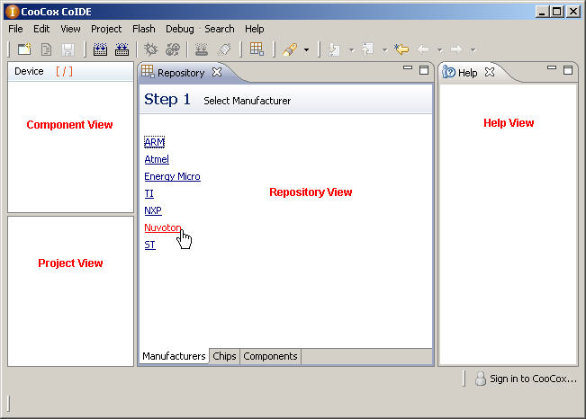

To create a simple embedded application using CooCox CoIDE, you will perform the following steps:

1. After launching CooCox CoIDE, select manufacturer, for example: Nuvoton.
2. Select chip, for example: NUC100LE3AN, the right side of CoIDE will display the corresponding information of the chip.
3. Check the components which you want to use, for example, check GPIO component. CoIDE will promote you to create a new project.
4. Input the project's name, CoIDE will create a project contained startup code and main.c file for you. The components you selected in third step will be added to your project, too.
5. Click GPIO in repository view, the detailed descriptions of GPIO component will show in help view.
6. Click GPIO in component view, you can find there are some examples for this component.
7. Click “add” to copy the existing example to your project. For example, add “BlinkExp”.
8. Click "Yes" to add the example, and you can see the default path of the example.
9. CoIDE will automatically add the BlinkExp.c example to the project.
10. Click Build button to compile and link the program.
11. Click Debug Configuration button to open the configuration dialog.
12. Select Nu-Link or CoLinkEx as the adapter according to that you use.
13. Click Download button to download code to flash.
14. Click Debug button to start debug.
15. After launching debug successfully, CoIDE will come into debug mode.
16. The initial debug UI only shows a few debug windows, you can open the other debug windows through view menu.
17. Setting breakpoints in c window or in the disassembly window.